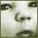
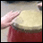

The resources in the following collections have been developed to assist teaching and learning in the Arts in the New Zealand Curriculum.
Dance materials
Explore the following collections which have been developed to support
the teaching and learning of dance in The Arts in New Zealand Curriculum. |
 |
Discovering Dance – Teachers' Notes
These teachers' notes accompany the DVDs Discovering Dance, designed to help students in Aotearoa New Zealand learn and understand the discipline of dance. The two DVDs explore a range of dance genres/styles based around seven key themes originating from many different cultures.
http://www.tki.org.nz/r/arts/dance/discover_dance/index_e.php
|
|
Satyagraha: Mahatma
Gandhi's life in dance
This level 4 unit for the performing and visual arts, for years 7–10,
is based around the life and times of Mahatma Gandhi. The unit incorporates
contemporary Bollywood-style dance and drama into a four-scene play, which
can be recorded or performed for an audience.
http://www.tki.org.nz/r/arts/dance/satyagraha/index_e.php
|
|
Dance Wall Charts Teacher
Support Material
Eight large wall charts were developed by the Ministry of Education to support
the teaching of dance as described in The Arts in the New Zealand Curriculum.
This material provides dance exercises, discussion ideas and background
information related to each chart.
http://www.tki.org.nz/r/arts/dance/index_e.php
|
|
Dance Units for Levels 6-8
Nine dance units developed to support the teaching of dance to students
at levels 6, 7 and 8. These plans support the teaching of dance in The
Arts in the New Zealand Curriculum for years 11-13.
http://www.tki.org.nz/r/arts/dance/units6-8/
|
|
Contemporary
Dance Aotearoa – Teachers Notes for Years 11-13
These teachers notes accompany the video Contemporary Dance Aotearoa
– Three New Zealand Dance Works, which features excerpts from
performances that were staged in Auckland in 2003. The video allows students
to view and interpret a variety of performances and to gain insights into
how they were developed. Interviews with the choreographers will help students
to understand the contexts of the dances and the choreographic process.
http://www.tki.org.nz/r/arts/dance/contemporary/index_e.php
|
|

|
Drama materials
Explore the following collections which have been developed to support
the teaching and learning of drama in The Arts in New Zealand Curriculum. |
|
Radio Drama: Bow Down Shadrach
This drama resource was developed around a Radio NZ radio play, Bow Down Shadrach, based on the novel of the same name by Joy Cowley. This resource supports the teaching of drama in The Arts in the New Zealand Curriculum for years 9 to 11, at level 6.
http://www.tki.org.nz/r/arts/drama/radio/index_e.php |
|
NZ
Monologues for Years 11–13
A selection of monologues from New Zealand plays for classroom drama performance
and for study. This material supports the teaching of drama in The
Arts in New Zealand Curriculum for years 11 to 13.
http://www.tki.org.nz/r/arts/drama/nzmonologues/index_e.php |
|
HOD
Handbook: Secondary Drama
A guide for heads of drama department providing information on programme
planning, assessment, production, resources, and departmental policy and
responsibilities. This material supports the teaching of drama in The
Arts in New Zealand Curriculum for years 9 to 13.
http://www.tki.org.nz/r/arts/drama/hod_handbook/index_e.php
|
|
Being Eve
Developed around the teen drama television series Being Eve, this
material supports the teaching and learning of drama in The Arts in
New Zealand Curriculum for years 9 and 10.
http://www.tki.org.nz/r/arts/being_eve/index_e.php |
|
The Bellbird
Based on the development and performance of the recently-written historic
New Zealand play The Bellbird by Stephen Sinclair, this material
supports the teaching of drama in The Arts in New Zealand Curriculum
for years 11 and 12.
http://www.tki.org.nz/r/arts/drama/bellbird/index_e.php |
|  |
The Play about the
Baby
A study of a professional staging of the contemporary American play The
Play about the Baby by Edward Albee, this material supports the teaching
of drama in The Arts in New Zealand Curriculum for years 12 and
13.
http://www.tki.org.nz/r/arts/drama/baby/index_e.php |
|
Travesties
Based around the recent performance of the play Travesties by Tom
Stoppard, this material supports the teaching of drama in The Arts
in New Zealand Curriculum for years 12 and 13.
http://www.tki.org.nz/r/arts/drama/travesties/index_e.php |
|
Purapurawhetū
and the Pohutukawa Tree
Based on a comparison of the two New Zealand plays – Purapurawhetū
by Briar Grace-Smith and The Pohutukawa Tree by Bruce Mason –
written 50 years apart and the bicultural landscape between them, this
material supports the teaching of drama in The Arts in New Zealand
Curriculum for years 12 and 13.
http://www.tki.org.nz/r/arts/drama/purapurawhetu/index_e.php |
|
|
Music materials
Explore the following collections which have been developed to support
the teaching and learning of music in The Arts in New Zealand Curriculum.
|
 |
Into Music 4
This site provides the online support material referred to in Into Music
4, a resource for teachers of years 1–13 students. This online
material contains 13 examples from schools of music planning, including
school-wide music programmes, full unit plans, and learning ideas. There
is also advice on assessment in music, and planning and reviewing a school
arts policy.
http://www.tki.org.nz/r/arts/music/intomusic4/
|
|
Into Music 3
Into Music 3, for teachers of students in years 7–10, is the third
book and CD set in a series designed to support the music discipline of
The Arts in the New Zealand Curriculum. From this web page you can
download MIDI files that support the "Twelve-bar Blues" unit in the Playing
chapter (page 51).
http://www.tki.org.nz/r/arts/music/intomusic/
|
|
Music Inside Out
Music Inside Out provides case studies of three community music education
activities, representing the sorts of activities that typically complement
classroom music curriculum programmes. The case studies celebrate students'
musical achievement, and highlight how students and mentors share their
passion for music with the world beyond the classroom.
http://www.tki.org.nz/r/arts/music/insideout/
|
|  |
Music and special needs
Music and special needs was written to help teachers and other carers to
successfully involve children with special needs in regular classroom music,
and to use the medium of music to encourage such children to develop many
other important skills.
http://www.tki.org.nz/r/arts/music/specialneeds/
|
|
|
Visual Arts
Explore the following collections which have been developed to support
the teaching and learning of visual arts in The Arts in New Zealand
Curriculum.
|
|
Ans Westra teacher and student
resources This website has been developed
to provide units of work: unit standard 9050 and achievement standards
90021, 90471 and 90477. These units may be used as standalone units or
in conjunction with a visit to the Ans Westra exhibition – Handboek:
Ans Westra Photographs, the publication, Handboek: Ans Westra photographs,
or the DVD, Visible Evidence.
The units may be used as an introduction to photography, as part of a
year's photography course, or as a distinct unit within a Level 1 or 2
general art programme. These materials may be modified to suit the needs
of the students or adapted for use as part of a Level 3 programme.
http://www.tki.org.nz/r/arts/visarts/ans-westra/ |
 |
The Portobello doll project
A series of richly woven learning experiences based around dolls is presented
by Kerry Mackay, formerly a teacher at Portobello School in Dunedin. The
project culminated in Dunedin artist Nicola Jackson's concept of a giant
doll, called Portobello, whose skirt panels carried the school's students'
visual narratives of family history to Te Papa and back.
http://www.tki.org.nz/r/arts/visarts/portobello/
|
|
Art auctions were just
the beginning!
An amazingly visionary series of visual arts projects and events at Macandrew
Intermediate School are described by specialist visual arts teacher Lesley
Hirst. Practising artists are integral to the school's visual arts programme,
which has transformed the culture and appearance of the school, engaged
and enriched the wider Dunedin arts community, and is enthusiastically supported
by local organisations and individuals.
http://www.tki.org.nz/r/arts/visarts/artauctions/
|
|
The matiti banners
A spectacular series of mixed-media banners were the result of learning
in, through, and about the visual arts in the contexts of science and Māori
visual culture. Jane Winnie, Lecturer in the Visual Arts, provided this
rich learning opportunity for language support teachers who were enrolled
in the bilingual programme at the Wellington College of Education. They
collaborated to create the banners on the theme of the matiti (growing seasons)
of the traditional Māori calendar.
http://www.tki.org.nz/r/arts/visarts/matiti/
|